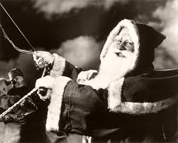
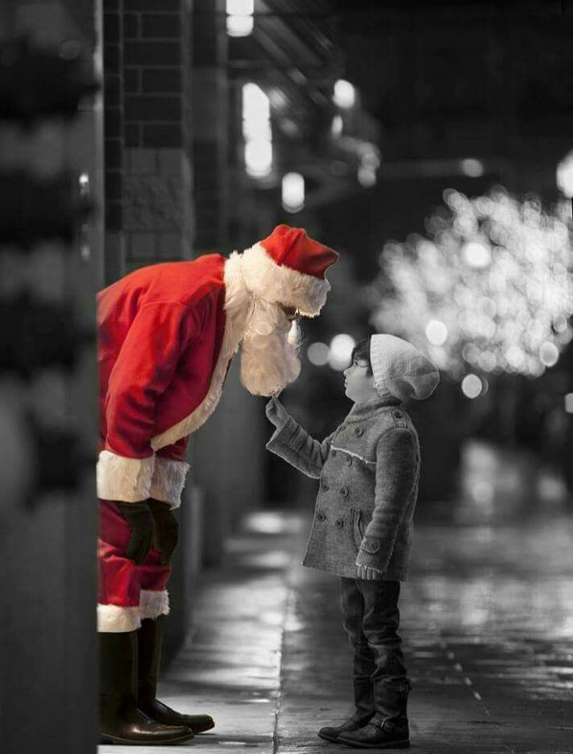

Santa Claus, also known as Father Christmas, Saint Nicholas, Saint Nick, Kris Kringle, or simply Santa, is a legendary character originating in Western Christian culture who is said to bring gifts on Christmas Eve of toys and candy to well-behaved children, and either coal or nothing to naughty children. He is said to accomplish this with the aid of Christmas elves, who make the toys in his workshop at the North Pole, and flying reindeer who pull his sleigh through the air.
The modern character of Santa Claus was based on traditions surrounding the historical Saint Nicholas (a fourth-century Greek bishop and gift-giver of Myra), the English figure of Father Christmas, and the Dutch figure of Sinterklaas (also based on Saint Nicholas).
Santa Claus is generally depicted as a portly, jolly, white-bearded man, often with spectacles, wearing a red coat with white fur collar and cuffs, white-fur-cuffed red trousers, red hat with white fur, and black leather belt and boots, carrying a bag full of gifts for children. He is commonly portrayed as laughing in a way that sounds like "ho ho ho". This image became popular in the United States and Canada in the 19th century due to the significant influence of the 1823 poem "A Visit from St. Nicholas." Caricaturist and political cartoonist Thomas Nast also played a role in the creation of Santa's image. This image has been maintained and reinforced through song, radio, television, children's books, films, and advertising.


